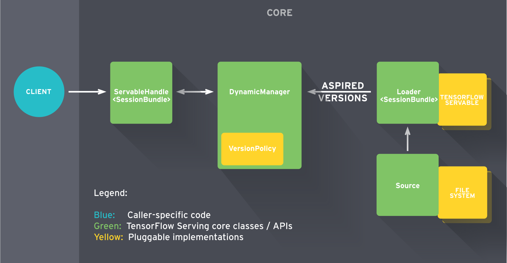

Architecture¶
TensorFlow Serving is a flexible, high-performance serving system for machine learning models, designed for production environments. TensorFlow Serving makes it easy to deploy new algorithms and experiments, while keeping the same server architecture and APIs. TensorFlow Serving provides out of the box integration with TensorFlow models, but can be easily extended to serve other types of models.
Key Concepts¶
To understand the architecture of TensorFlow Serving, you need to understand the following key concepts:
Servables¶
Servables are the central abstraction in TensorFlow Serving. Servables are the underlying objects that clients use to perform computation (for example, a lookup or inference).
The size and granularity of a Servable is flexible. A single Servable might include anything from a single shard of a lookup table to a single model to a tuple of inference models. Servables can be of any type and interface, enabling flexibility and future improvements such as:
- streaming results
- experimental APIs
- asynchronous modes of operation
Servables do not manage their own lifecycle.
Typical servables include the following:
- a TensorFlow SavedModelBundle (
tensorflow::Session) - a lookup table for embedding or vocabulary lookups
Servable Versions¶
TensorFlow Serving can handle one or more versions of a servable over the lifetime of a single server instance. This enables fresh algorithm configurations, weights, and other data to be loaded over time. Versions enable more than one version of a servable to be loaded concurrently, supporting gradual rollout and experimentation. At serving time, clients may request either the latest version or a specific version id, for a particular model.
Servable Streams¶
A servable stream is the sequence of versions of a servable, sorted by increasing version numbers.
Models¶
TensorFlow Serving represents a model as one or more servables. A machine-learned model may include one or more algorithms (including learned weights) and lookup or embedding tables.
You can represent a composite model as either of the following:
- multiple independent servables
- single composite servable
A servable may also correspond to a fraction of a model. For example, a large lookup table could be sharded across many TensorFlow Serving instances.
Loaders¶
Loaders manage a servable's life cycle. The Loader API enables common infrastructure independent from specific learning algorithms, data or product use-cases involved. Specifically, Loaders standardize the APIs for loading and unloading a servable.
Sources¶
Sources are plugin modules that find and provide servables. Each Source provides zero or more servable streams. For each servable stream, a Source supplies one Loader instance for each version it makes available to be loaded. (A Source is actually chained together with zero or more SourceAdapters, and the last item in the chain emits the Loaders.)
TensorFlow Serving’s interface for Sources can discover servables from arbitrary storage systems. TensorFlow Serving includes common reference Source implementations. For example, Sources may access mechanisms such as RPC and can poll a file system.
Sources can maintain state that is shared across multiple servables or versions. This is useful for servables that use delta (diff) updates between versions.
Aspired Versions¶
Aspired versions represent the set of servable versions that should be loaded and ready. Sources communicate this set of servable versions for a single servable stream at a time. When a Source gives a new list of aspired versions to the Manager, it supercedes the previous list for that servable stream. The Manager unloads any previously loaded versions that no longer appear in the list.
See the advanced tutorial to see how version loading works in practice.
Managers¶
Managers handle the full lifecycle of Servables, including:
- loading Servables
- serving Servables
- unloading Servables
Managers listen to Sources and track all versions. The Manager tries to fulfill Sources' requests, but may refuse to load an aspired version if, say, required resources aren't available. Managers may also postpone an "unload". For example, a Manager may wait to unload until a newer version finishes loading, based on a policy to guarantee that at least one version is loaded at all times.
TensorFlow Serving Managers provide a simple, narrow interface --
GetServableHandle() -- for clients to access loaded servable instances.
Core¶
Using the standard TensorFlow Serving APis, TensorFlow Serving Core manages the following aspects of servables:
- lifecycle
- metrics
TensorFlow Serving Core treats servables and loaders as opaque objects.
Life of a Servable¶

Broadly speaking:
- Sources create Loaders for Servable Versions.
- Loaders are sent as Aspired Versions to the Manager, which loads and serves them to client requests.
In more detail:
- A Source plugin creates a Loader for a specific version. The Loader contains whatever metadata it needs to load the Servable.
- The Source uses a callback to notify the Manager of the Aspired Version.
- The Manager applies the configured Version Policy to determine the next action to take, which could be to unload a previously loaded version or to load the new version.
- If the Manager determines that it's safe, it gives the Loader the required resources and tells the Loader to load the new version.
- Clients ask the Manager for the Servable, either specifying a version explicitly or just requesting the latest version. The Manager returns a handle for the Servable.
For example, say a Source represents a TensorFlow graph with frequently updated model weights. The weights are stored in a file on disk.
- The Source detects a new version of the model weights. It creates a Loader that contains a pointer to the model data on disk.
- The Source notifies the Dynamic Manager of the Aspired Version.
- The Dynamic Manager applies the Version Policy and decides to load the new version.
- The Dynamic Manager tells the Loader that there is enough memory. The Loader instantiates the TensorFlow graph with the new weights.
- A client requests a handle to the latest version of the model, and the Dynamic Manager returns a handle to the new version of the Servable.
Extensibility¶
TensorFlow Serving provides several extension points where you can add new functionality.
Version Policy¶
Version Policies specify the sequence of version loading and unloading within a single servable stream.
TensorFlow Serving includes two policies that accommodate most known use- cases. These are the Availability Preserving Policy (avoid leaving zero versions loaded; typically load a new version before unloading an old one), and the Resource Preserving Policy (avoid having two versions loaded simultaneously, thus requiring double the resources; unload an old version before loading a new one). For simple usage of TensorFlow Serving where the serving availability of a model is important and the resource costs low, the Availability Preserving Policy will ensure that the new version is loaded and ready before unloading the old one. For sophisticated usage of TensorFlow Serving, for example managing versions across multiple server instances, the Resource Preserving Policy requires the least resources (no extra buffer for loading new versions).
Source¶
New Sources could support new filesystems, cloud offerings and algorithm backends. TensorFlow Serving provides some common building blocks to make it easy & fast to create new sources. For example, TensorFlow Serving includes a utility to wrap polling behavior around a simple source. Sources are closely related to Loaders for specific algorithms and data hosting servables.
See the Custom Source document for more about how to create a custom Source.
Loaders¶
Loaders are the extension point for adding algorithm and data backends. TensorFlow is one such algorithm backend. For example, you would implement a new Loader in order to load, provide access to, and unload an instance of a new type of servable machine learning model. We anticipate creating Loaders for lookup tables and additional algorithms.
See the Custom Servable document to learn how to create a custom servable.
Batcher¶
Batching of multiple requests into a single request can significantly reduce the cost of performing inference, especially in the presence of hardware accelerators such as GPUs. TensorFlow Serving includes a request batching widget that lets clients easily batch their type-specific inferences across requests into batch requests that algorithm systems can more efficiently process. See the Batching Guide for more information.